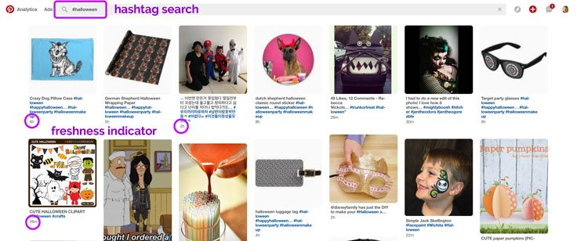
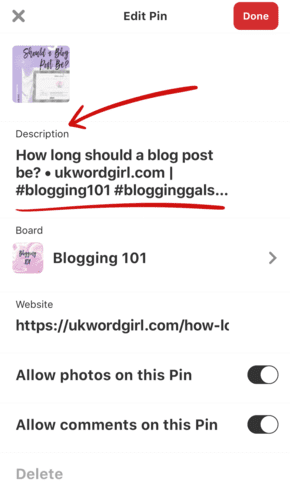

Hashtags are a common tool used on social media to make social media posts and updates more visible. But are Pinterest hashtags different from hashtags on other social networks? What are Pinterest hashtags? Are they necessary? How do they work? These are some of the questions we will be answering in this article.
What are Pinterest Hashtags?
Hashtags are usually a phrase or a word that comes after a hash (#). On Pinterest, it is used to recognize Pins on a particular issue or topic and make them visible. It is only a hashtag if it is a phrase or word preceded by the hash (#).
An example of the hashtag is #whatarepinteresthashtags. But if you want to make it more readable, you can write it like this: #WhatArePinterestHashtags
Pinterest hashtags are shown in the order of their chronology with the newest Pins being right at the top.
Finding Pins with Hashtags
By clicking on the hashtag in the description of a Pin, you can easily find content that is related to the hashtag.
You can as well do a search for the hashtag to bring up related content. But if you type the same words or phrases and not include the hashtag, you’ll get the regular search results page.

How to Add Hashtags to Your Pins
When hashtags are used on Pinterest, it is usually in the description. You do not have to use the hashtags all over your sentences. It is okay that it comes just after you are done with the description.
You should not forget that it is possible to click on the hashtags, so, you should allow Pinners to read the description down to your call-to-action before they see the distraction of clicking to the hashtag feed.

When you type a hashtag, it comes up with suggestions and the number of times the hashtag has been used.
Hashtags to Use on Pinterest?
You need to be descriptive and specific in your use of the hashtag on Pinterest. This is even recommended by Pinterest. Your phrase or words should describe what you have in your Pin. You can also add other hashtags that have close relations to your niche. If you have a hashtag for your brand, you can as well add it to your Pin and place it as the first hashtag in the Pin, so that it’s the one that Pinners are more likely to click on.
It is wrong for you to add popular but irrelevant hashtags to your pin to gain attention. This might work on other social media platforms, but not on Pinterest. As a matter of fact, you can get banned from Pinterest if you do this.
Unlike the hashtags on other social media platforms, hashtags on Pinterest are not used for commentary, memes or jokes. When using Pinterest hashtags, you should ensure that you’re objective and the hashtag is relevant to the content of your pin.
What’s The Number of Hashtags That Can Be Included in a Pinterest Pin?
Pinterest recommends that the maximum number of hashtags that can be in a pin is 20. Although many people have suggested using just one or two. There really is no particular number of Pinterest hashtags that is the most ideal but it makes sense and is decent, maybe even more effective, to use between 2 and 8 hashtags on your description.
The number of hashtags that might seem to be the most reasonable is probably 4. Pinterest probably gave a hint of this in the fall of 2017. Pinterest did not show the Pin description under the reviews on boards and in streams. Instead, they displayed just 4 hashtags and Pins that had more than 4 hashtags did not have all the hashtags displayed, just the first 4. But basically, you should not overdo it, so, people do not see your post as spam.
Why You Should Use Hashtags On Pinterest?
Hashtags on Pinterest work in a lot of ways and it offers a wide range of benefits:
- It increases your brand awareness
Adding branded hashtags to your Pins will make it easy to find your content by simply clicking on the hashtag.

- It allows you to organize your Pins in a specific way and this allows others to find what they want.
Keywords marketing is becoming very popular and more people are joining in. so, using some search words on Pinterest can help in generating vague results, and most of the time, this is with Pins that are not relevant to the search. Because these hashtags are relatively new, they have less spammy or vague Pins added to them.
- Hashtags connect the readers with the content creators
If you put up a post with the #veganrecipes, other people that love vegan recipes can search for this hashtag. Since this hashtag is contained in your Pin description, your Pin is one of those that will be showed and they can click on it. This can lead to them following you since you’ve offered them what they want exactly.
- These benefits help to bring some growth to your blog. Hashtags on Pinterest are relatively new, so you could use it to your advantage and get the cutting edge in this new marketing strategy.
Anywhere You Shouldn’t Use Hashtags

Yes. You shouldn’t use hashtags on your Pinterest bio, profile name, board names, or board description. These hashtags aren’t clickable, so they’re completely useless, offer no value, and are just a waste of space. You should add them to your Pin description. Other places where hashtags don’t go, you can fit in keywords.
Switch up your hashtags
Your Pinterest marketing strategy shouldn’t have you using a particular hashtag repeatedly. That’s not recommended and is in fact, pointless. It limits your audience to only a particular set of people. It makes more sense for you to switch things up with different hashtags.
Different hashtags ensure that your Pin can reach more people. Marketers and bloggers now use different hashtags to make their posts more visible to people and it’s very effective.
For example, if you’re a baker and you’ve created a Pin, with 3 hashtags. The hashtags could be #DarkChocolate #DessertIdeas #ChocolateCake
All these 3 hashtags ensure that 3 different types of audience and 3 different searches can show your Pin. This makes it more visible and more effective.
About the author
 Scott Matthews is one of the most renowned essay writers providing instant assignment help. He also writes blog posts and contributes his paper service to different blogs. He loves to travel during his free time, meet people and learn new cultures. When he is not writing, he is usually behind a pile of books reading.
Scott Matthews is one of the most renowned essay writers providing instant assignment help. He also writes blog posts and contributes his paper service to different blogs. He loves to travel during his free time, meet people and learn new cultures. When he is not writing, he is usually behind a pile of books reading.
Leave a Reply